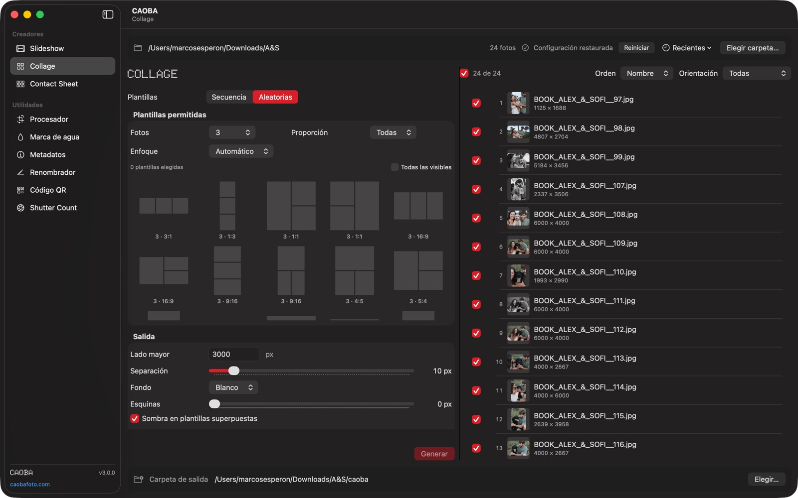
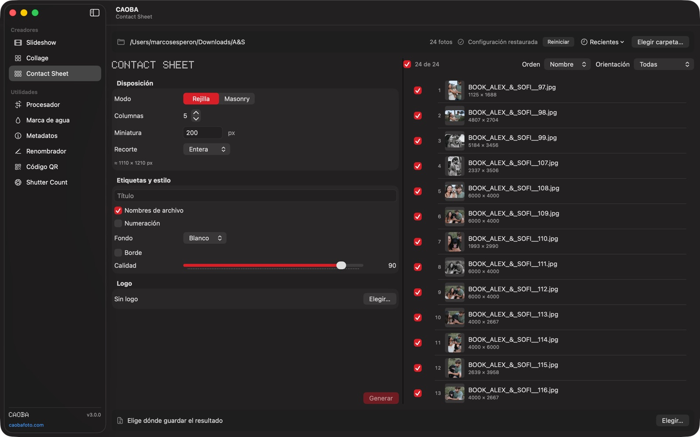
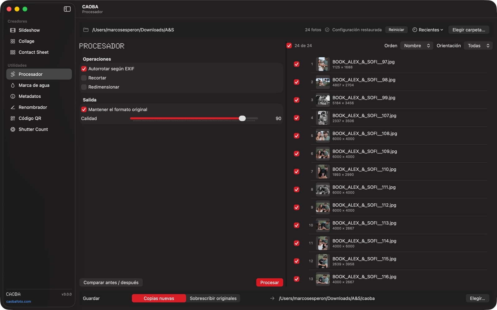
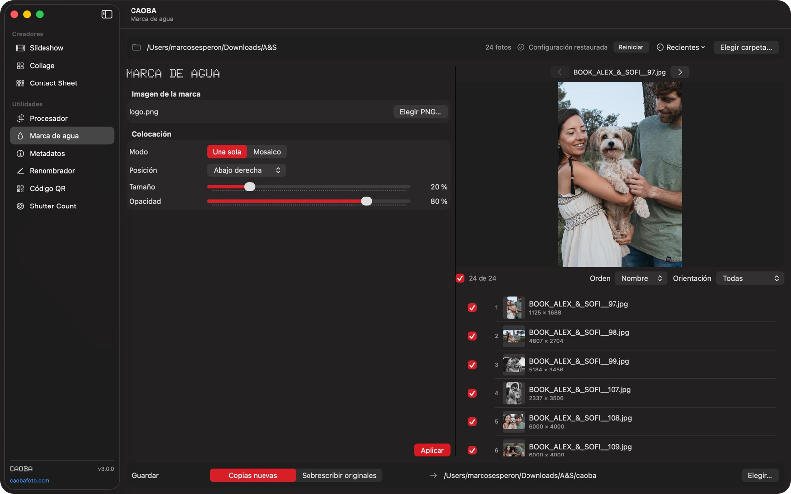
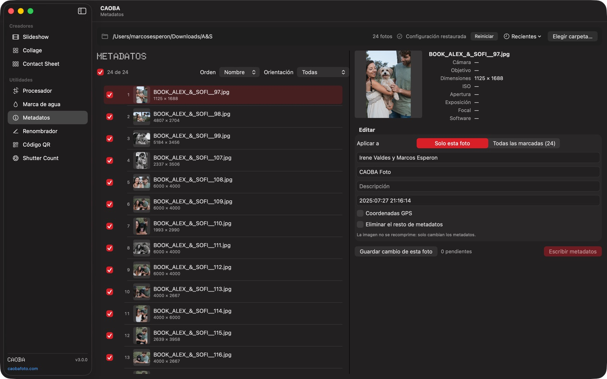
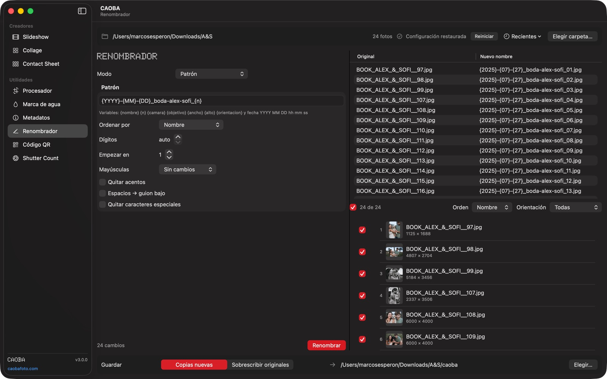
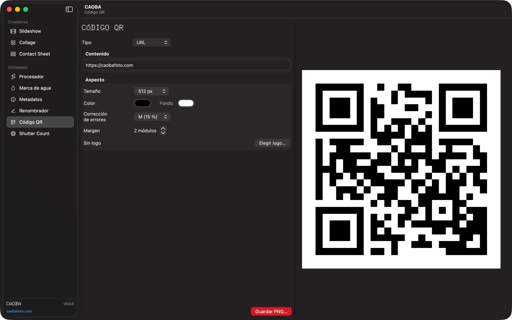

01CreadorCreator
Slideshow
Fotos o collages a MP4, montados en un timeline como el de un editor de vídeo.Photos or collages to MP4, arranged on a video-editor style timeline.
- Seis formatos: TV y YouTube, Historias y Reels, feed de Instagram, clásicos.Six formats: TV and YouTube, Stories and Reels, Instagram feed, classics.
- Ken Burns con editor de encuadre, previsualización y detección de caras.Ken Burns with framing editor, preview and face detection.
- Música arrastrable y recortable, crossfade, fundido de salida y normalización EBU R128.Draggable, trimmable music, crossfade, fade-out and EBU R128 loudness.
- Codificación por hardware, sin ficheros temporales entre tus fotos.Hardware encoding, with no temp files among your photos.

02CreadorCreator
Collage
570 plantillas de 1 a 9 fotos, editor de encuadre por celda y foco automático por saliencia o caras.570 templates for 1 to 9 photos, per-cell framing editor and automatic focus by saliency or faces.

03CreadorCreator
Contact Sheet
Rejilla o masonry, título, numeración, borde y logo. Con estimación del tamaño final.Grid or masonry, title, numbering, border and logo. With estimated output size.

04
ProcesadorProcessor
Rotar, recortar, redimensionar, calidad y formato en una pasada. Entra RAW y HEIC; conserva EXIF, GPS y color.Rotate, crop, resize, quality and format in one pass. RAW and HEIC in; EXIF, GPS and color preserved.

05
Marca de aguaWatermark
Tu PNG suelto o en mosaico, con giro, opacidad y vista previa sobre cualquier foto.Your PNG, single or tiled, with rotation, opacity and a preview on any photo.

06
MetadatosMetadata
Lee y escribe EXIF, incluido GPS con mapa, sin recomprimir la imagen.Read and write EXIF, GPS with map included, without recompressing the image.

07
RenombradorRenamer
Patrones con fecha, cámara y contador; numeración corregida; buscar y reemplazar. Y deshacer.Patterns with date, camera and counter; fixed numbering; search and replace. And undo.

08
Código QRQR Code
Texto, URL, WiFi, contacto, email, teléfono, SMS, ubicación o evento, con colores y logo.Text, URL, WiFi, contact, email, phone, SMS, location or event, with colors and logo.
09
Shutter Count
Disparos del obturador y vida útil estimada de tu cámara a partir de un JPG o RAW.Shutter actuations and estimated life of your camera from a JPG or RAW.